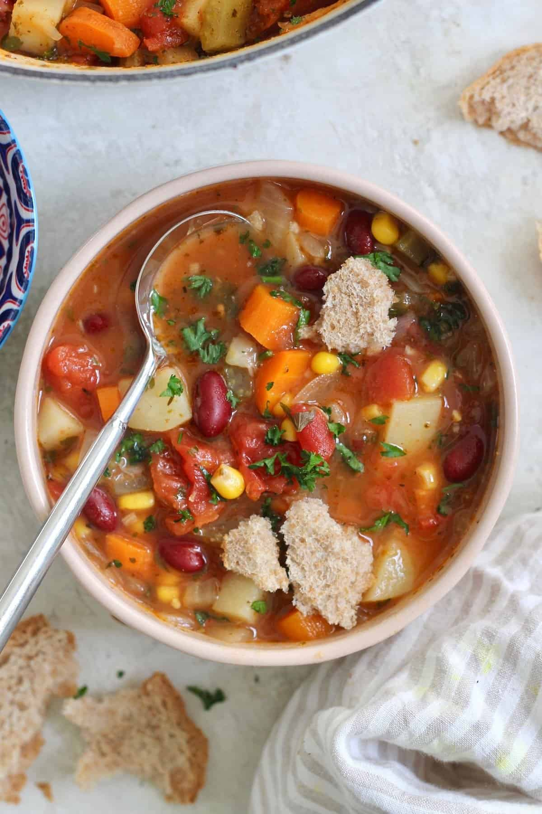

Veggie-Loaded Vegetable Soup

Description
Perfect for a healthy, hearty lunch or dinner. Made with good for you, fiber-rich ingredients like kidney beans, carrots and tomatoes.
Ingredients
- 2 tbsp extra virgin olive oil
- 1 large onion, diced
- 4 cloves garlic, minced
- 3 medium carrots, diced
- 3 stalks celery, diced
- 2 medium potatoes, peeled and diced (I use Russet)
- 2 tsp Italian seasoning
- 4 cups vegetable broth + 1 cup water (I like Better Than Bouillon)
- 2 15oz cans diced tomatoes
- 1 cup corn kernels (I used frozen)
- 1 15oz can kidney beans, drained and rinsed
- 1 bay leaf
- ¼ cup fresh parsley, chopped
- 1 tbsp freshly squeezed lemon juice, or to taste
- 1 ½ tsp kosher salt, or to taste + freshly ground black pepper
Steps
Step 1
- Heat oil in a large dutch oven over medium-low heat. Once hot, add onion and 1 tsp kosher salt and cook for 5 minutes, stirring often. Add garlic, carrots, celery, and potatoes and cook for 5 more minutes, stirring often. Add Italian seasoning and cook for 1 more minute.
Step 2
- Add broth, water, tomatoes, corn, beans, bay leaf, and several grinds of black pepper. Bring to a boil and then reduce the heat to low and simmer, covered, until the vegetables are tender, about 35 minutes.
Step 3
- Remove from heat and stir in parsley and lemon juice. Remove bay leaf and season to taste with salt (don't be shy, I added lots of salt!) and pepper. Serve hot with crusty bread.